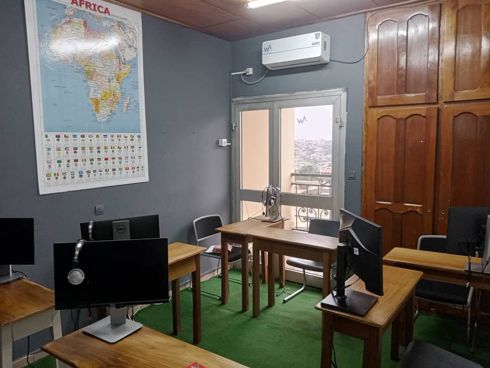
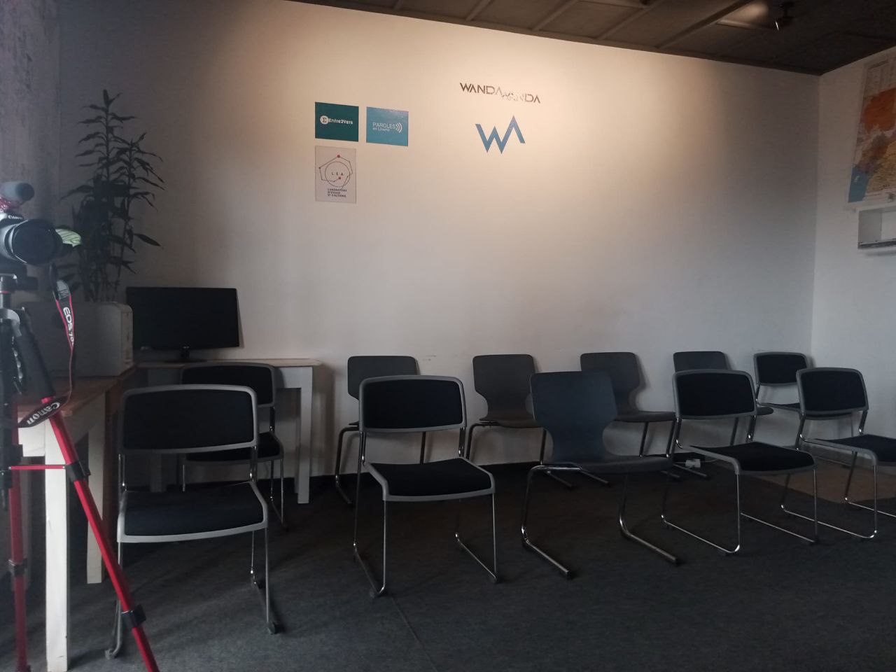
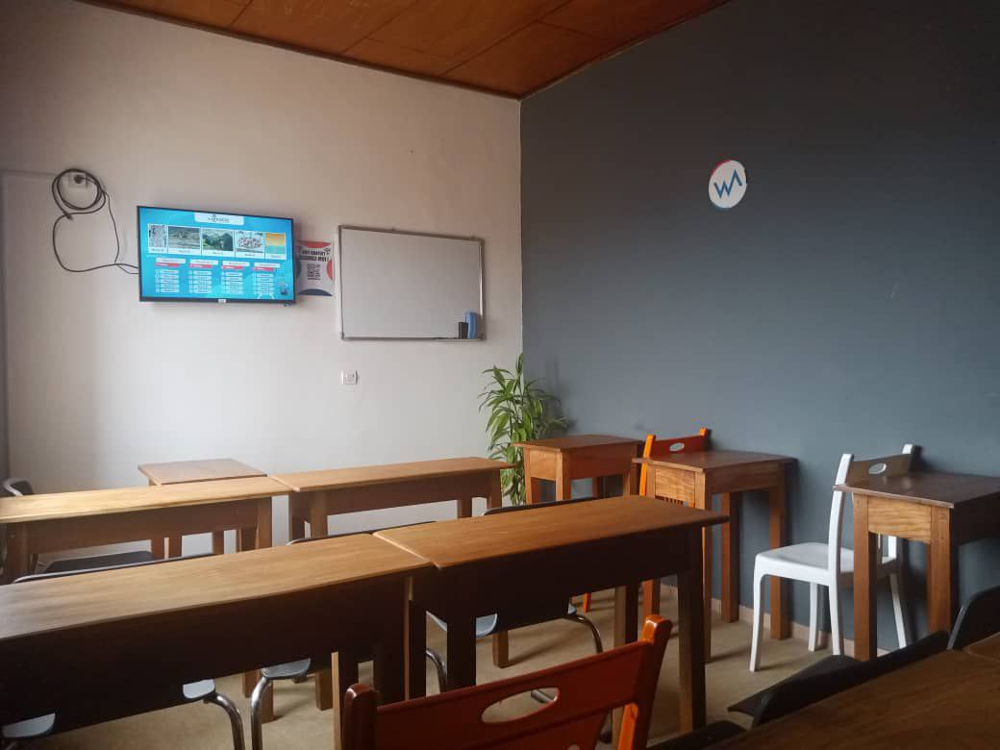
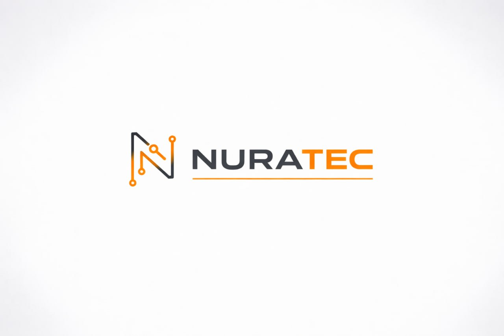

Nos Espaces







Bureaux • Salles de conférence • Salles de cours • Podcast studio
Réserver maintenantNURATEQ est un espace moderne et professionnel offrant des bureaux flexibles, des salles de conférence, des salles de formation et un studio podcast. Nos espaces sont bien éclairés, climatisés et équipés de télévisions 55 pouces et 32 pouces.
Bureaux modernes pour travailler dans un cadre professionnel.
Espace dédié pour vos enregistrements audio et vidéo.
Idéal pour réunions, séminaires et formations.
Parfait pour formations professionnelles et ateliers.



📍 Localisation : Yaoundé, ESSOS (Ben le boucher), Face Express Union 3e étage
🕒 Horaires :
Lundi à vendredi : 8H — 18H
Samedi : 9H — 15H
📞 (+237) 698.10.28.92 / 680.05.28.60
📧 nurateqcm@gmail.com
Nous écrire